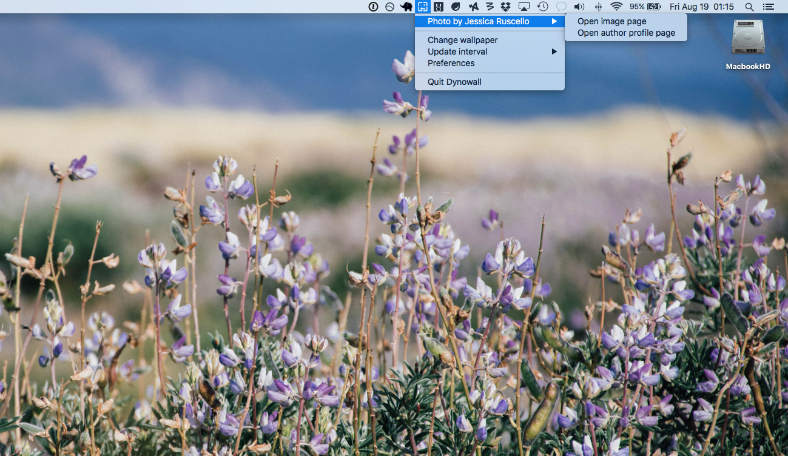
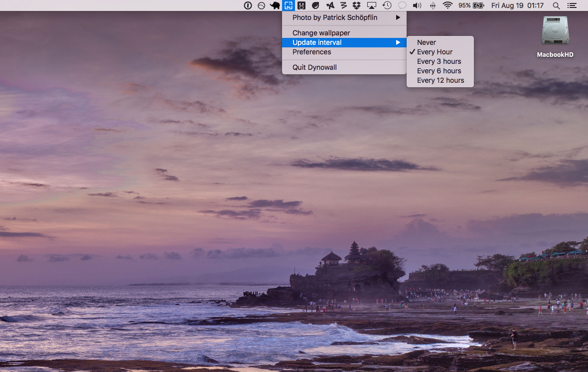
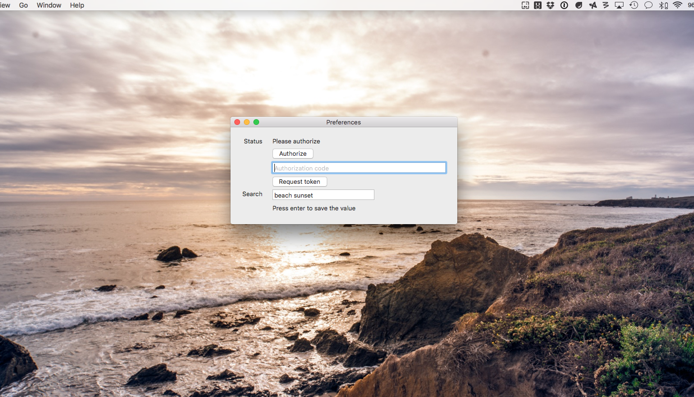
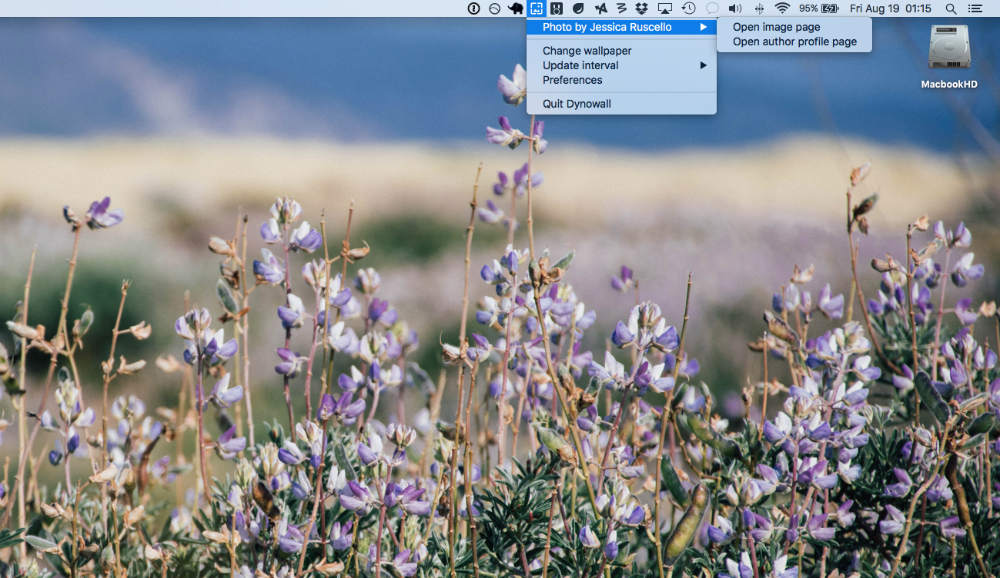
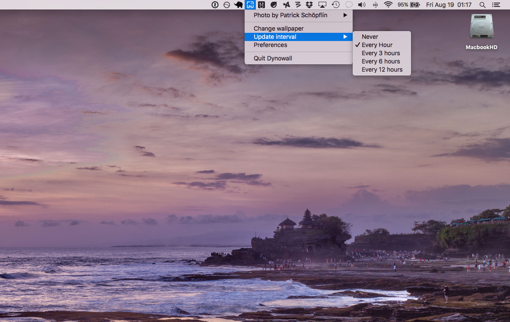
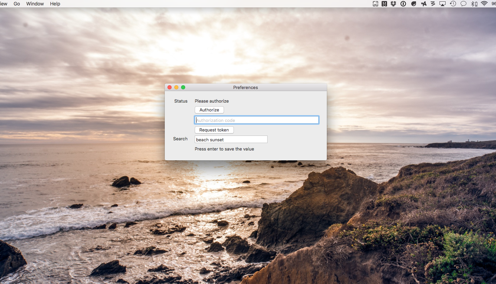

DynoWall
Change OSX wallpaper with a random high quality picture from Unsplash
Screenshots



TODO
- [ ] Add start at login support
- [ ] Improve intervals schedule
- [X] Select folder where put downloaded images
Change OSX wallpaper with a random high quality picture from Unsplash


